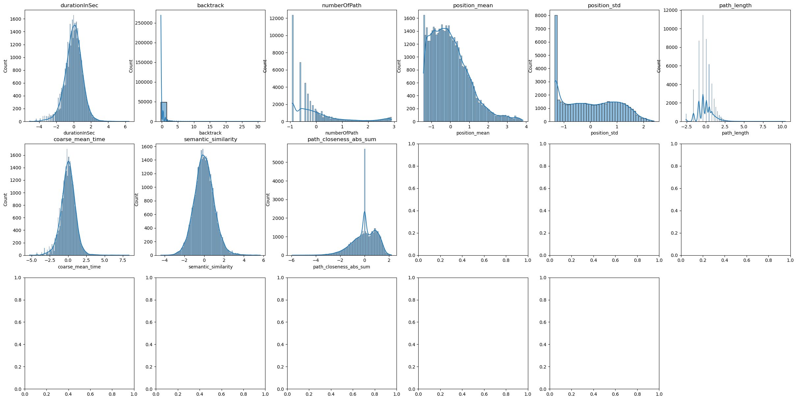

import pandas as pd
import numpy as np
import seaborn as sns
import matplotlib.pyplot as plt
from pathlib import Path
from sklearn.decomposition import PCA
from sklearn.manifold import TSNE
from umap import umap_ as UMAP
DATA_PATH = Path.cwd() / "../data"
data = {
Path(f).stem: pd.read_csv(f, index_col=0) for f in DATA_PATH.glob("combined_*.csv")
}
print(list(data.keys()))
['combined_metrics_finished_edges', 'combined_metrics_finished_paths', 'combined_metrics_unfinished_edges', 'combined_metrics_unfinished_paths']
features_finished_paths = data["combined_metrics_finished_paths"].reset_index(drop=True)
features_unfinished_paths = data["combined_metrics_unfinished_paths"].reset_index(
drop=True
)
display(features_finished_paths.dropna(subset=["hashedIpAddress"]))
display(features_unfinished_paths)
| hashedIpAddress | timestamp | durationInSec | path | rating | backtrack | numberOfPath | path_length | coarse_mean_time | position_mean | ... | optimal_path_length | average_time_on_page | sucessive_pairs | sucessive_pairs_encoded | semantic_similarity | path_degree_abs_sum | path_clustering_abs_sum | path_degree_centrality_abs_sum | path_betweenness_abs_sum | path_closeness_abs_sum | |
|---|---|---|---|---|---|---|---|---|---|---|---|---|---|---|---|---|---|---|---|---|---|
| 0 | 6a3701d319fc3754 | 2011-02-15 03:26:49 | 166 | ['14th_century', '15th_century', '16th_century... | NaN | 0 | 3.0 | 9 | 18.444444 | 0.284902 | ... | 3.0 | 1.371901 | [('14th_century', '15th_century'), ('15th_cent... | [0.8438330292701721, 0.8465813398361206, 0.265... | 0.596161 | 5.197422 | -3.233355 | -3.234431 | -5.004633 | -2.964052 |
| 1 | 3824310e536af032 | 2012-08-12 06:36:52 | 88 | ['14th_century', 'Europe', 'Africa', 'Atlantic... | 3.0 | 0 | 13.0 | 5 | 17.600000 | 0.167841 | ... | 3.0 | 1.313433 | [('14th_century', 'Europe'), ('Europe', 'Afric... | [0.254788875579834, 0.6508224606513977, 0.3347... | 0.528948 | 7.010212 | -2.318889 | -1.421642 | -3.524030 | -1.640078 |
| 2 | 415612e93584d30e | 2012-10-03 21:10:40 | 138 | ['14th_century', 'Niger', 'Nigeria', 'British_... | NaN | 0 | 19.0 | 8 | 17.250000 | 0.214077 | ... | 3.0 | 1.422680 | [('14th_century', 'Niger'), ('Niger', 'Nigeria... | [0.22429417073726654, 0.7818886637687683, 0.39... | 0.488120 | 5.236336 | -3.212821 | -3.195518 | -4.962358 | -2.938361 |
| 3 | 64dd5cd342e3780c | 2010-02-08 07:25:25 | 37 | ['14th_century', 'Renaissance', 'Ancient_Greec... | NaN | 0 | 2.0 | 4 | 9.250000 | 0.223735 | ... | 2.0 | 0.804348 | [('14th_century', 'Renaissance'), ('Renaissanc... | [0.3987608551979065, 0.3302411735057831, 0.666... | 0.465273 | NaN | NaN | NaN | NaN | NaN |
| 4 | 015245d773376aab | 2013-04-23 15:27:08 | 175 | ['14th_century', 'Italy', 'Roman_Catholic_Chur... | 3.0 | 0 | 1.0 | 7 | 25.000000 | 0.316027 | ... | 3.0 | 1.666667 | [('14th_century', 'Italy'), ('Italy', 'Roman_C... | [0.1762578785419464, 0.3073163628578186, 0.214... | 0.333869 | 6.315864 | -2.737924 | -2.115989 | -4.991059 | -2.013457 |
| ... | ... | ... | ... | ... | ... | ... | ... | ... | ... | ... | ... | ... | ... | ... | ... | ... | ... | ... | ... | ... | ... |
| 51304 | 15a13a1d66ef5456 | 2012-10-03 02:23:35 | 66 | ['Yagan', 'Ancient_Egypt', 'Civilization'] | NaN | 0 | 3.0 | 3 | 22.000000 | NaN | ... | 2.0 | 2.062500 | [('Yagan', 'Ancient_Egypt'), ('Ancient_Egypt',... | [0.17201459407806396, 0.40563249588012695] | 0.288824 | 5.209486 | -2.320631 | -3.222367 | -5.666352 | -1.732727 |
| 51305 | 2ef7ac844cefda58 | 2011-03-16 05:42:18 | 165 | ['Yagan', 'Folklore', 'Brothers_Grimm', '19th_... | 3.0 | 1 | 7.0 | 8 | 18.333333 | 0.346339 | ... | 3.0 | 1.833333 | [('Yagan', 'Folklore'), ('Folklore', 'Brothers... | [0.2101505994796753, 0.29172447323799133, 0.24... | 0.346520 | 4.297096 | -4.423940 | -4.134757 | -5.967147 | -3.460478 |
| 51306 | 12863abb7887f890 | 2013-11-22 04:42:52 | 228 | ['Yagan', 'Australia', 'England', 'France', 'U... | NaN | 0 | 2.0 | 7 | 32.571429 | 0.151467 | ... | 3.0 | 3.081081 | [('Yagan', 'Australia'), ('Australia', 'Englan... | [0.12989795207977295, 0.7208417654037476, 0.62... | 0.396291 | 6.343111 | -2.115506 | -2.088742 | -3.527183 | -2.438024 |
| 51307 | 19f8284371753362 | 2011-02-27 07:42:47 | 56 | ['Yarralumla%2C_Australian_Capital_Territory',... | 1.0 | 0 | 8.0 | 4 | 14.000000 | 0.153554 | ... | 2.0 | 0.682927 | [('Yarralumla%2C_Australian_Capital_Territory'... | [0.4492543637752533, 0.41598689556121826, 0.44... | 0.436014 | 7.695758 | -1.820454 | -0.736095 | -2.147011 | -1.268453 |
| 51308 | 24b84602179de377 | 2011-10-09 01:11:41 | 30 | ['Ziad_Jarrah', 'Germany', 'Jew'] | NaN | 0 | 3.0 | 3 | 10.000000 | 0.201319 | ... | 2.0 | 1.304348 | [('Ziad_Jarrah', 'Germany'), ('Germany', 'Jew')] | [0.11018936336040497, 0.3047122359275818] | 0.207451 | 7.275172 | -1.595770 | -1.156681 | -3.333625 | -1.172824 |
51306 rows × 21 columns
| index | hashedIpAddress | timestamp | durationInSec | path | target | type | backtrack | numberOfPath | path_length | ... | optimal_path_length | average_time_on_page | sucessive_pairs | sucessive_pairs_encoded | semantic_similarity | path_degree_abs_sum | path_clustering_abs_sum | path_degree_centrality_abs_sum | path_betweenness_abs_sum | path_closeness_abs_sum | |
|---|---|---|---|---|---|---|---|---|---|---|---|---|---|---|---|---|---|---|---|---|---|
| 0 | 2 | 2b015fb8181c48f2 | 2011-02-07 15:00:19 | 1818 | ['Malawi', 'Democracy', 'Alexander_the_Great'] | First_Crusade | timeout | 0 | 1.0 | 3 | ... | 3.0 | 50.500000 | [('Malawi', 'Democracy'), ('Democracy', 'Alexa... | [0.3289797902107239, 0.15958838164806366] | 0.244284 | 4.624973 | -1.658146 | -3.806880 | -6.527886 | -2.041349 |
| 1 | 4 | 53a53bc244e08a6a | 2011-02-07 17:18:25 | 1808 | ['Paraguay', 'Bolivia'] | Mount_St._Helens | timeout | 0 | 1.0 | 2 | ... | 3.0 | 113.000000 | [('Paraguay', 'Bolivia')] | [0.7933145761489868] | 0.793315 | NaN | NaN | NaN | NaN | NaN |
| 2 | 5 | 131600803df4895e | 2011-02-07 17:42:37 | 2009 | ['Agriculture', 'History_of_the_world', 'China... | Grand_Canal_of_China | timeout | 0 | 1.0 | 4 | ... | 3.0 | 38.634615 | [('Agriculture', 'History_of_the_world'), ('Hi... | [0.26539474725723267, 0.2245648205280304, 0.37... | 0.288841 | 6.429719 | -1.952055 | -2.002134 | -4.467183 | -1.925200 |
| 3 | 6 | 486bb79910fe9dd2 | 2011-02-07 18:01:00 | 1932 | ['Mind', 'Christianity', 'Europe', 'Renaissanc... | Scouting | timeout | 0 | 1.0 | 7 | ... | 4.0 | 28.411765 | [('Mind', 'Christianity'), ('Christianity', 'E... | [0.23058123886585236, 0.3337669372558594, 0.30... | 0.376883 | 5.705032 | -3.544534 | -2.726821 | -4.845663 | -2.936609 |
| 4 | 7 | 6d136e371e42474f | 2011-02-07 18:07:50 | 175 | ['4-2-0', 'United_States', 'Agriculture', 'Sug... | Cane_Toad | restart | 0 | 170.0 | 5 | ... | 5.0 | 3.723404 | [('4-2-0', 'United_States'), ('United_States',... | [0.19640374183654785, 0.23717810213565826, 0.3... | 0.245052 | 7.585732 | -2.590255 | -0.846121 | -2.271594 | -0.927471 |
| ... | ... | ... | ... | ... | ... | ... | ... | ... | ... | ... | ... | ... | ... | ... | ... | ... | ... | ... | ... | ... | ... |
| 19647 | 24869 | 109ed71f571d86e9 | 2014-01-15 12:00:12 | 182 | ['Turks_and_Caicos_Islands', 'United_States', ... | Iraq_War | restart | 0 | 35.0 | 6 | ... | 3.0 | 2.527778 | [('Turks_and_Caicos_Islands', 'United_States')... | [0.4149491488933563, 0.40031805634498596, 0.39... | 0.421867 | 7.555088 | -1.505405 | -0.876766 | -2.304742 | -1.574654 |
| 19648 | 24870 | 109ed71f571d86e9 | 2014-01-15 12:06:45 | 180 | ['Franz_Kafka', 'Tuberculosis', 'World_Health_... | Cholera | restart | 1 | 37.0 | 7 | ... | 3.0 | 1.894737 | [('Franz_Kafka', 'Tuberculosis'), ('Tuberculos... | [0.2173137366771698, 0.34790855646133423, 0.42... | 0.358657 | 3.669951 | -3.305998 | -4.761902 | -7.644179 | -4.383847 |
| 19649 | 24872 | 2e09a7224600a7cd | 2014-01-15 15:06:40 | 1900 | ['Computer_programming', 'Linguistics', 'Cultu... | The_Beatles | timeout | 1 | 5.0 | 4 | ... | 3.0 | 33.928571 | [('Computer_programming', 'Linguistics'), ('Li... | [0.2608160674571991, 0.5456496477127075, 0.600... | 0.468859 | 4.760035 | -2.802979 | -3.671818 | -6.478384 | -2.157703 |
| 19650 | 24873 | 60af9e2138051b96 | 2014-01-15 15:24:41 | 1903 | ['Jamaica', 'United_Kingdom', 'World_War_II', ... | Alan_Turing | timeout | 0 | 1.0 | 4 | ... | 3.0 | 36.596154 | [('Jamaica', 'United_Kingdom'), ('United_Kingd... | [0.39752137660980225, 0.3371908664703369, 0.42... | 0.387896 | 7.158709 | -1.836719 | -1.273145 | -2.951980 | -1.724655 |
| 19651 | 24874 | 1cf0cbb3281049ab | 2014-01-15 21:54:01 | 352 | ['Mark_Antony', 'Rome', 'Tennis', 'Hawk-Eye', ... | Feather | restart | 0 | 49.0 | 5 | ... | 3.0 | 8.585366 | [('Mark_Antony', 'Rome'), ('Rome', 'Tennis'), ... | [0.2700643837451935, 0.28349533677101135, 0.21... | 0.237981 | 5.595124 | -1.730546 | -2.836729 | -5.768889 | -2.107167 |
19652 rows × 23 columns
features_finished_paths.columns
Index(['hashedIpAddress', 'timestamp', 'durationInSec', 'path', 'rating',
'backtrack', 'numberOfPath', 'path_length', 'coarse_mean_time',
'position_mean', 'position_std', 'optimal_path_length',
'average_time_on_page', 'sucessive_pairs', 'sucessive_pairs_encoded',
'semantic_similarity', 'path_degree_abs_sum', 'path_clustering_abs_sum',
'path_degree_centrality_abs_sum', 'path_betweenness_abs_sum',
'path_closeness_abs_sum'],
dtype='object')
features_cols_used_for_clustering = [
"durationInSec",
# 'rating_x',
"backtrack",
"numberOfPath",
# "link_position",
"position_mean",
"position_std",
"path_length",
# 'optimal_path_length',
"coarse_mean_time",
"semantic_similarity",
# "path_degree_abs_sum",
# "path_clustering_abs_sum",
# 'path_degree_centrality_abs_sum',
# 'path_betweenness_abs_sum',
'path_closeness_abs_sum'
]
len(features_cols_used_for_clustering)
9
cols_replace_nan_with_mean = [ # cols where nan values are replaced with mean of the column
# "path_degree_slope_before",
# "path_degree_slope_after",
# "path_clustering_slope_before",
# "path_clustering_slope_after",
# "path_degree_centrality_slope_before",
# "path_degree_centrality_slope_after",
# "path_betweenness_slope_before",
# "path_betweenness_slope_after",
# "path_closeness_slope_before",
# "path_closeness_slope_after",
"path_degree_abs_sum",
"path_clustering_abs_sum",
'path_degree_centrality_abs_sum',
'path_betweenness_abs_sum',
'path_closeness_abs_sum'
]
def replace_nan_with_mean(df, cols):
for col in cols:
df[col] = df[col].fillna(df[col].mean())
return df
def replace_value_with_mean(df, cols, value):
for col in cols:
df[col] = df[col].replace(value, df[col].mean())
return df
features_finished_paths_replaced = replace_nan_with_mean(
features_finished_paths, cols_replace_nan_with_mean
)
features_unfinished_paths_replaced = replace_nan_with_mean(
features_unfinished_paths, cols_replace_nan_with_mean
)
features_finished_paths_replaced = features_finished_paths
features_unfinished_paths_replaced = features_unfinished_paths
cols_log = [ # cols to apply log transformation
"durationInSec",
# 'rating_x',
# "backtrack",
"numberOfPath",
# "link_position",
"path_length",
# 'optimal_path_length',
"coarse_mean_time",
# "semantic_similarity",
# "path_degree_slope_before",
# "path_degree_slope_after",
# "path_clustering_slope_before",
# "path_clustering_slope_after",
# "path_degree_centrality_slope_before",
# "path_degree_centrality_slope_after",
# "path_betweenness_slope_before",
# "path_betweenness_slope_after",
# "path_closeness_slope_before",
# "path_closeness_slope_after",
]
features_finished_paths_replaced_log = features_finished_paths_replaced.copy()
features_finished_paths_replaced_log[cols_log] = np.log(features_finished_paths_replaced_log[cols_log])
features_unfinished_paths_replaced_log = features_unfinished_paths_replaced.copy()
features_unfinished_paths_replaced_log[cols_log] = np.log(features_unfinished_paths_replaced_log[cols_log])
# z-score all features columns
features_finished_paths_zscore = features_finished_paths_replaced_log.copy()
features_finished_paths_zscore[features_cols_used_for_clustering] = features_finished_paths_zscore[
features_cols_used_for_clustering
].apply(lambda x: (x - x.mean()) / x.std())
display(features_finished_paths_zscore)
features_unfinished_paths_zscore = features_unfinished_paths_replaced_log.copy()
features_unfinished_paths_zscore[features_cols_used_for_clustering] = features_unfinished_paths_zscore[
features_cols_used_for_clustering
].apply(lambda x: (x - x.mean()) / x.std())
display(features_unfinished_paths_zscore)
| hashedIpAddress | timestamp | durationInSec | path | rating | backtrack | numberOfPath | path_length | coarse_mean_time | position_mean | ... | optimal_path_length | average_time_on_page | sucessive_pairs | sucessive_pairs_encoded | semantic_similarity | path_degree_abs_sum | path_clustering_abs_sum | path_degree_centrality_abs_sum | path_betweenness_abs_sum | path_closeness_abs_sum | |
|---|---|---|---|---|---|---|---|---|---|---|---|---|---|---|---|---|---|---|---|---|---|
| 0 | 6a3701d319fc3754 | 2011-02-15 03:26:49 | 0.525935 | ['14th_century', '15th_century', '16th_century... | NaN | -0.276111 | -0.427809 | 1.072539 | 0.107413 | 0.087182 | ... | 3.0 | 1.371901 | [('14th_century', '15th_century'), ('15th_cent... | [0.8438330292701721, 0.8465813398361206, 0.265... | 1.906754 | 5.197422 | -3.233355 | -3.234431 | -5.004633 | -0.445707 |
| 1 | 3824310e536af032 | 2012-08-12 06:36:52 | -0.173342 | ['14th_century', 'Europe', 'Africa', 'Atlantic... | 3.0 | -0.276111 | 0.233284 | -0.359181 | 0.037613 | -0.533082 | ... | 3.0 | 1.313433 | [('14th_century', 'Europe'), ('Europe', 'Afric... | [0.254788875579834, 0.6508224606513977, 0.3347... | 1.159513 | 7.010212 | -2.318889 | -1.421642 | -3.524030 | 0.923916 |
| 2 | 415612e93584d30e | 2012-10-03 21:10:40 | 0.322389 | ['14th_century', 'Niger', 'Nigeria', 'British_... | NaN | -0.276111 | 0.404376 | 0.785645 | 0.007696 | -0.288094 | ... | 3.0 | 1.422680 | [('14th_century', 'Niger'), ('Niger', 'Nigeria... | [0.22429417073726654, 0.7818886637687683, 0.39... | 0.705604 | 5.236336 | -3.212821 | -3.195518 | -4.962358 | -0.419131 |
| 3 | 64dd5cd342e3780c | 2010-02-08 07:25:25 | -1.127988 | ['14th_century', 'Renaissance', 'Ancient_Greec... | NaN | -0.276111 | -0.610612 | -0.902711 | -0.920490 | -0.236922 | ... | 2.0 | 0.804348 | [('14th_century', 'Renaissance'), ('Renaissanc... | [0.3987608551979065, 0.3302411735057831, 0.666... | 0.451605 | 5.727391 | -2.924257 | -2.704462 | -4.896963 | 0.000000 |
| 4 | 015245d773376aab | 2013-04-23 15:27:08 | 0.584109 | ['14th_century', 'Italy', 'Roman_Catholic_Chur... | 3.0 | -0.276111 | -0.923115 | 0.460392 | 0.560363 | 0.252102 | ... | 3.0 | 1.666667 | [('14th_century', 'Italy'), ('Italy', 'Roman_C... | [0.1762578785419464, 0.3073163628578186, 0.214... | -1.009289 | 6.315864 | -2.737924 | -2.115989 | -4.991059 | 0.537664 |
| ... | ... | ... | ... | ... | ... | ... | ... | ... | ... | ... | ... | ... | ... | ... | ... | ... | ... | ... | ... | ... | ... |
| 51304 | 15a13a1d66ef5456 | 2012-10-03 02:23:35 | -0.490319 | ['Yagan', 'Ancient_Egypt', 'Civilization'] | NaN | -0.276111 | -0.427809 | -1.603442 | 0.369966 | NaN | ... | 2.0 | 2.062500 | [('Yagan', 'Ancient_Egypt'), ('Ancient_Egypt',... | [0.17201459407806396, 0.40563249588012695] | -1.510087 | 5.209486 | -2.320631 | -3.222367 | -5.666352 | 0.828073 |
| 51305 | 2ef7ac844cefda58 | 2011-03-16 05:42:18 | 0.519277 | ['Yagan', 'Folklore', 'Brothers_Grimm', '19th_... | 3.0 | 0.412911 | -0.045808 | 0.785645 | 0.098414 | 0.412718 | ... | 3.0 | 1.833333 | [('Yagan', 'Folklore'), ('Folklore', 'Brothers... | [0.2101505994796753, 0.29172447323799133, 0.24... | -0.868646 | 4.297096 | -4.423940 | -4.134757 | -5.967147 | -0.959250 |
| 51306 | 12863abb7887f890 | 2013-11-22 04:42:52 | 0.875609 | ['Yagan', 'Australia', 'England', 'France', 'U... | NaN | -0.276111 | -0.610612 | 0.460392 | 0.954402 | -0.619844 | ... | 3.0 | 3.081081 | [('Yagan', 'Australia'), ('Australia', 'Englan... | [0.12989795207977295, 0.7208417654037476, 0.62... | -0.315312 | 6.343111 | -2.115506 | -2.088742 | -3.527183 | 0.098457 |
| 51307 | 19f8284371753362 | 2011-02-27 07:42:47 | -0.671353 | ['Yarralumla%2C_Australian_Capital_Territory',... | 1.0 | -0.276111 | 0.014395 | -0.902711 | -0.303227 | -0.608784 | ... | 2.0 | 0.682927 | [('Yarralumla%2C_Australian_Capital_Territory'... | [0.4492543637752533, 0.41598689556121826, 0.44... | 0.126309 | 7.695758 | -1.820454 | -0.736095 | -2.147011 | 1.308354 |
| 51308 | 24b84602179de377 | 2011-10-09 01:11:41 | -1.359064 | ['Ziad_Jarrah', 'Germany', 'Jew'] | NaN | -0.276111 | -0.427809 | -1.603442 | -0.804373 | -0.355693 | ... | 2.0 | 1.304348 | [('Ziad_Jarrah', 'Germany'), ('Germany', 'Jew')] | [0.11018936336040497, 0.3047122359275818] | -2.414753 | 7.275172 | -1.595770 | -1.156681 | -3.333625 | 1.407281 |
51309 rows × 21 columns
| index | hashedIpAddress | timestamp | durationInSec | path | target | type | backtrack | numberOfPath | path_length | ... | optimal_path_length | average_time_on_page | sucessive_pairs | sucessive_pairs_encoded | semantic_similarity | path_degree_abs_sum | path_clustering_abs_sum | path_degree_centrality_abs_sum | path_betweenness_abs_sum | path_closeness_abs_sum | |
|---|---|---|---|---|---|---|---|---|---|---|---|---|---|---|---|---|---|---|---|---|---|
| 0 | 2 | 2b015fb8181c48f2 | 2011-02-07 15:00:19 | 1.087068 | ['Malawi', 'Democracy', 'Alexander_the_Great'] | First_Crusade | timeout | -0.323962 | -0.971356 | -0.715136 | ... | 3.0 | 50.500000 | [('Malawi', 'Democracy'), ('Democracy', 'Alexa... | [0.3289797902107239, 0.15958838164806366] | -1.339492 | 4.624973 | -1.658146 | -3.806880 | -6.527886 | 0.633243 |
| 1 | 4 | 53a53bc244e08a6a | 2011-02-07 17:18:25 | 1.083233 | ['Paraguay', 'Bolivia'] | Mount_St._Helens | timeout | -0.323962 | -0.971356 | -1.386563 | ... | 3.0 | 113.000000 | [('Paraguay', 'Bolivia')] | [0.7933145761489868] | 3.595005 | 5.683793 | -3.118998 | -2.748061 | -4.922750 | 0.000000 |
| 2 | 5 | 131600803df4895e | 2011-02-07 17:42:37 | 1.156516 | ['Agriculture', 'History_of_the_world', 'China... | Grand_Canal_of_China | timeout | -0.323962 | -0.971356 | -0.238750 | ... | 3.0 | 38.634615 | [('Agriculture', 'History_of_the_world'), ('Hi... | [0.26539474725723267, 0.2245648205280304, 0.37... | -0.939028 | 6.429719 | -1.952055 | -2.002134 | -4.467183 | 0.759830 |
| 3 | 6 | 486bb79910fe9dd2 | 2011-02-07 18:01:00 | 1.129347 | ['Mind', 'Christianity', 'Europe', 'Renaissanc... | Scouting | timeout | -0.323962 | -0.971356 | 0.687943 | ... | 4.0 | 28.411765 | [('Mind', 'Christianity'), ('Christianity', 'E... | [0.23058123886585236, 0.3337669372558594, 0.30... | -0.147735 | 5.705032 | -3.544534 | -2.726821 | -4.845663 | -0.342470 |
| 4 | 7 | 6d136e371e42474f | 2011-02-07 18:07:50 | -0.540139 | ['4-2-0', 'United_States', 'Agriculture', 'Sug... | Cane_Toad | restart | -0.323962 | 3.019836 | 0.130764 | ... | 5.0 | 3.723404 | [('4-2-0', 'United_States'), ('United_States',... | [0.19640374183654785, 0.23717810213565826, 0.3... | -1.332590 | 7.585732 | -2.590255 | -0.846121 | -2.271594 | 1.847221 |
| ... | ... | ... | ... | ... | ... | ... | ... | ... | ... | ... | ... | ... | ... | ... | ... | ... | ... | ... | ... | ... | ... |
| 19647 | 24869 | 109ed71f571d86e9 | 2014-01-15 12:00:12 | -0.512874 | ['Turks_and_Caicos_Islands', 'United_States', ... | Iraq_War | restart | -0.323962 | 1.791618 | 0.432678 | ... | 3.0 | 2.527778 | [('Turks_and_Caicos_Islands', 'United_States')... | [0.4149491488933563, 0.40031805634498596, 0.39... | 0.256562 | 7.555088 | -1.505405 | -0.876766 | -2.304742 | 1.141878 |
| 19648 | 24870 | 109ed71f571d86e9 | 2014-01-15 12:06:45 | -0.520555 | ['Franz_Kafka', 'Tuberculosis', 'World_Health_... | Cholera | restart | 0.169336 | 1.834803 | 0.687943 | ... | 3.0 | 1.894737 | [('Franz_Kafka', 'Tuberculosis'), ('Tuberculos... | [0.2173137366771698, 0.34790855646133423, 0.42... | -0.311545 | 3.669951 | -3.305998 | -4.761902 | -7.644179 | -1.919766 |
| 19649 | 24872 | 2e09a7224600a7cd | 2014-01-15 15:06:40 | 1.117737 | ['Computer_programming', 'Linguistics', 'Cultu... | The_Beatles | timeout | 0.169336 | 0.279389 | -0.238750 | ... | 3.0 | 33.928571 | [('Computer_programming', 'Linguistics'), ('Li... | [0.2608160674571991, 0.5456496477127075, 0.600... | 0.678910 | 4.760035 | -2.802979 | -3.671818 | -6.478384 | 0.506433 |
| 19650 | 24873 | 60af9e2138051b96 | 2014-01-15 15:24:41 | 1.118833 | ['Jamaica', 'United_Kingdom', 'World_War_II', ... | Alan_Turing | timeout | -0.323962 | -0.971356 | -0.238750 | ... | 3.0 | 36.596154 | [('Jamaica', 'United_Kingdom'), ('United_Kingd... | [0.39752137660980225, 0.3371908664703369, 0.42... | -0.048755 | 7.158709 | -1.836719 | -1.273145 | -2.951980 | 0.978396 |
| 19651 | 24874 | 1cf0cbb3281049ab | 2014-01-15 21:54:01 | -0.054317 | ['Mark_Antony', 'Rome', 'Tennis', 'Hawk-Eye', ... | Feather | restart | -0.323962 | 2.053101 | 0.130764 | ... | 3.0 | 8.585366 | [('Mark_Antony', 'Rome'), ('Rome', 'Tennis'), ... | [0.2700643837451935, 0.28349533677101135, 0.21... | -1.396141 | 5.595124 | -1.730546 | -2.836729 | -5.768889 | 0.561510 |
19652 rows × 23 columns
features_cols = features_finished_paths_zscore.columns
sns.pairplot(
features_finished_paths_zscore[
features_cols_used_for_clustering
].sample(5000),
corner=True,
diag_kind="hist",
)
c:\Users\Cyril\anaconda3\envs\DLbiomed\lib\site-packages\seaborn\axisgrid.py:123: UserWarning: The figure layout has changed to tight
self._figure.tight_layout(*args, **kwargs)
<seaborn.axisgrid.PairGrid at 0x1b819bdc520>
fig, axs = plt.subplots(3, 6, figsize=(30, 15))
axs.flatten()[-1].axis("off")
for i, feature in enumerate(features_cols_used_for_clustering):
ax = axs.flatten()[i]
sns.histplot(features_finished_paths_zscore[feature], kde=True, ax=ax)
ax.set_title(feature)
plt.show()

features_finished_paths[features_cols_used_for_clustering].isna().sum()
durationInSec 0
backtrack 0
numberOfPath 3
position_mean 2024
position_std 2024
path_length 0
coarse_mean_time 0
semantic_similarity 0
path_closeness_abs_sum 0
dtype: int64
# run PCA on cols used for the pairplot
pca = PCA(n_components=5)
result = pca.fit_transform(features_finished_paths_zscore[features_cols_used_for_clustering].dropna())
# plot cumsum of explained variance
plt.plot(np.cumsum(pca.explained_variance_ratio_))
plt.show()
# show correlation of features
sns.heatmap(
features_finished_paths_zscore[features_cols_used_for_clustering].corr(),
annot=False,
cmap="icefire",
)
plt.show()
# plot the PCA results in 3D with plotly
import plotly.express as px
fig = px.scatter_3d(result, x=0, y=1, z=2,
color=3
)
fig.show()
# # run t-SNE on cols used for the pairplot
# tsne = TSNE(n_components=3, metric="cosine")
# result = tsne.fit_transform(
# features_finished_paths_zscore[features_cols_used_for_clustering].dropna()
# )
# # plot the t-SNE results in 3D with plotly
# fig = px.scatter_3d(
# result,
# x=0,
# y=1,
# z=2,
# color=features_finished_paths_zscore[features_cols_used_for_clustering].dropna()[
# "durationInSec"
# ],
# )
# fig.show()
# UMAP
umap = UMAP.UMAP(n_components=3, metric="cosine")
result = umap.fit_transform(
features_finished_paths_zscore[features_cols_used_for_clustering].dropna()
)
# plot the UMAP results in 3D with plotly
fig = px.scatter_3d(
result,
x=0,
y=1,
z=2,
color=features_finished_paths_zscore[features_cols_used_for_clustering].dropna()[
"path_length"
],
title="UMAP,path_length slope before as color",
)
fig.show()
# # run t-SNE on cols used for the pairplot
# tsne = TSNE(n_components=3, metric="euclidean")
# result_tsne_euc = tsne.fit_transform(
# features_finished_paths_zscore[features_cols_used_for_clustering].dropna()
# )
# # plot the t-SNE results in 3D with plotly
# fig = px.scatter_3d(
# result_tsne_euc,
# x=0,
# y=1,
# z=2,
# color=features_finished_paths_zscore[features_cols_used_for_clustering]
# .dropna()["path_length"]
# # .apply(lambda x: np.log(x)),
# )
# fig.show()
# UMAP
umap = UMAP.UMAP(n_components=3, metric="euclidean")
result_umap_euc = umap.fit_transform(
features_finished_paths_zscore[features_cols_used_for_clustering].dropna()
)
# plot the UMAP results in 3D with plotly
fig = px.scatter_3d(
result_umap_euc,
x=0,
y=1,
z=2,
color=features_finished_paths_zscore[features_cols_used_for_clustering].dropna()[
"path_length"
],
title="UMAP, path path_length slope before as color",
)
fig.show()